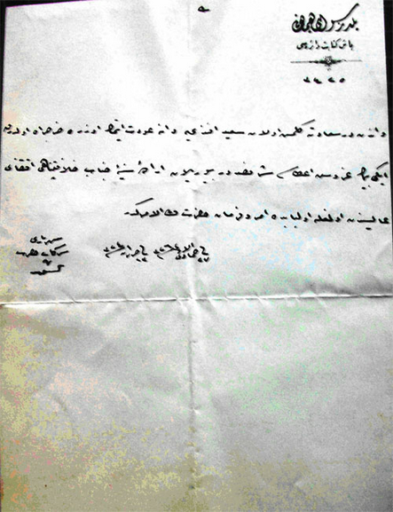
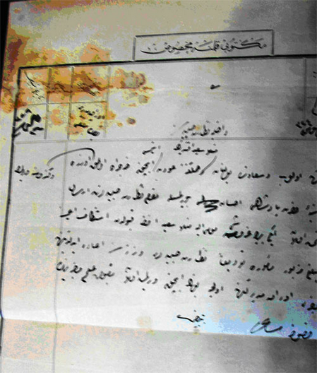
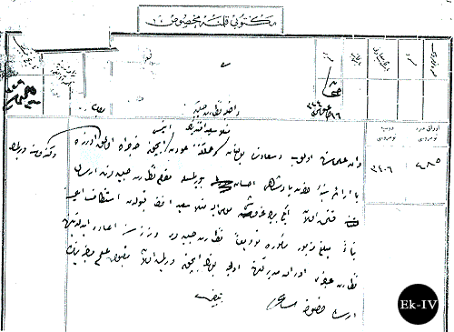

|
Van'a dönüþ için harcýrah teklifi ve Üstadýn harcýrahý reddi |
  
|
|
Van'a dönüþ için harcýrah teklifi ve Üstadýn harcýrahý reddi |
|
Van'a dönüþ için harcýrah teklifi ve Üstadýn harcýrahý reddi
Padiþahtan harcýrah için talep;

Yýldýz Sarayý Hümayunu
Baþkitabet Dairesi
3425
Van’dan Dersaadet’e gelmiþ olan Said Efendi’ye Van’a avdet etmek üzere harcýrah olarak ikibin kuruþ itasý þeref-sudur buyrulan irade-i seniyye-i cenab-ý hilafet-penahi iktizay-ý âlisinden olmaðla ol babda emr ü ferman hazret-i veliyyül emrindir.
Serkatbi-i Hazret-i Þehriyarî
Tahsin
27 Ca 1326 / 23 Haziran 1324

Bediüzzaman'ýn harcýrahý reddi;


Mektubi Kalemine Mahsus
16 Aðustos 1324
Evrak Müdiri Beyin tebliði
Evrak sýra numarasý 485
Dosya numarasý 3406
Mektubî Kalemine Mahsus:
Dahiliye Nezâret-i Celîlesine,
Van ulemâsýndan olup Dersaâdet'te bulunan Molla Said Efendi'nin memleketine avdet etmesi için harcýrâh olmak ve kendisine verilmek üzere bâ irâde-i seniyye-i hazret-i padiþahi ihsân buyurulmasýyla makâm-ý nezâret-i celîlelerine irsâl kýlýnmýþ olan iki bin kuruþu mumaileyh Molla Said Efendi kabulden istinkâf eylemesine binâen meblað-ý mezbur me'mura tevdian nezâret-i Celîleleri veznesine iâde edildiðine nezâret-i acizi evrâk müdürlüðüne evvelce bunun için verilmiþ olan makbuz-i ilmuhaberin irsali hususunda.
16 Aðustos 1324/29 Aðustos 1908
BOA., ZB., nr.325/115
Kaynak: Ramazan BALCI - RisaleHaber.Com